AnyPortrait > マニュアル > マテリアルをマージ
マテリアルをマージ
1.3.5
AnyPortraitは、複数の「Mesh Renderer」を順番にレンダリングする方法を使用します。
ところで、この方式はややもと「ドローコール（Draw Call）」を大きく増加させる要因となります。
そのため、AnyPortraitには「ドローコール」を減らすためのさまざまなシステムがあります。 （関連ページ）
しかし、従来のドローコール最適化システムは、同じイメージとマテリアルを持つ場合に限って動作するという限界がありました。
1つのキャラクターに2つ以上の画像が含まれている場合、または2つのキャラクターを同期して1つのキャラクターのように見せたい場合には、この限界点が大きく浮き彫りになります。
AnyPortrait v1.3.5で追加された「マテリアルマージ」機能は、この制限をもう少し軽減します。
画像が違っても「Shader」が同じであれば、複数のマテリアルを一度にレンダリングできます。
このページでは、「マテリアルマージ」機能の使用方法と主な特長、注意点などについて説明します。
特に、この機能を効果的に使用できる「キャラクター同期」の例を活用して説明します。
「キャラクター同期」に関するスクリプトをこのページでは詳しく紹介しませんので、関連ページを代わりに参考にしてください。
ドローコールと実行性能の関係
Unityの最適化ガイドでは、ドローコールをできるだけ減らす必要があることを案内します。
実際、ドローコールの最適化は、すべてのゲームエンジンで最優先されているパフォーマンス最適化のヒントです。
逆に言えば、これはエンジンユーザーだけでなくエンジン開発者にとっても重要な課題と考えられます。
Unityもドローコールが実行パフォーマンスに与える影響をますます減らしています。
（フォーラムによると、Unity 5以降のバージョンから効果的に管理されているようです。）
したがって、最近のエンジンユーザーは、ドローコールの管理を気にしなくても、以前のように大きな問題を経験しません。
限られた仕様のデバイスで実行することを目指すものでなければ、ユーザーはドローコールを厳しく最適化したときに得られる実行パフォーマンスの利点は大きくないでしょう。
Unity自体の最適化パフォーマンスが十分に向上したためです。
（特に後述するSRP Batchが代表的です。）
その結果、あなたのプロジェクトのパフォーマンスに問題がなければ、ドローコールによってあなたが事前にストレスを受けていなくても大丈夫です。
2つ以上のキャラクターのマテリアルをマージ

説明のためにキャラクターの服を交換する例を用意しました。 （関連ページ）
この例では、「MainCharacter」と「Costume」オブジェクトは互いに同期して1つのキャラクターのように動作します。
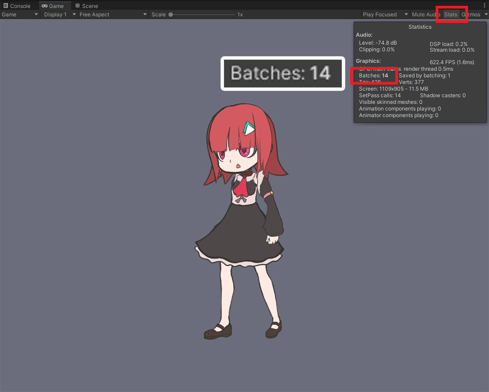
しかし、「Costume」のメッシュが「MainCharacter」のメッシュの間に配置され、上記のようにドローコールが大幅に増加します。
これは、「MainCharacter」と「Costume」がそれぞれ異なる画像を持ちながらドローコールをマージできなかったためです。
ドローコールは3つ（背景と2つのキャラクターオブジェクト）が予想されますが、実際にはそれ以上の14が記録されました。

レンダリングプロセスを詳しく見るために「Frame Debugger」を実行しましょう。
Unityメニューの「Window > Analysis > Frame Debugger」を実行します。
（メニューの位置はUnityバージョンによって異なる場合があります。）
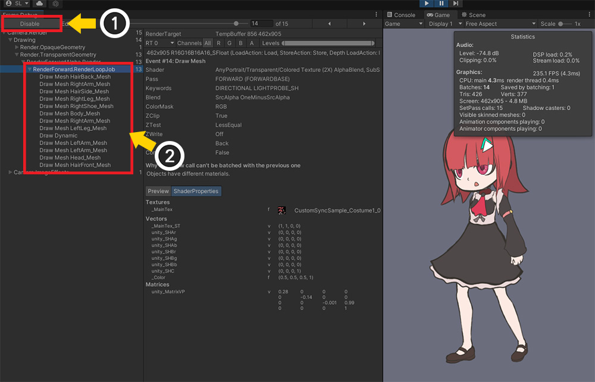
(1) ゲームを実行し、「Enable」ボタンを押します。
(2) 現在のレンダリング情報を見ることができます。

レンダリングステップを順番に示す画像です。
「MainCharacter」のメッシュと「Costume」のメッシュが交互にレンダリングされることがわかります。
マテリアルがマージされない場合は、上記のようにドローコールが過度に増加する可能性があることがわかります。

「マテリアルマージ」機能を使用するには、専用マテリアルを使用する必要があります。
(1) AnyPortraitエディタを開き、キャラクターを選択し、「Root Unit」を選択します。
(2) 「Material Library」ボタンを押します。
（「マテリアルライブラリ」の使い方の詳細については、関連ページを参照してください。）

(1) プリセット中に「Mergeable Presets」を選択します。
（プロジェクトのレンダリングパイプラインがURPに設定されている場合は、「URP（2021）Presets」を代わりに選択してください。）

(1) プリセットを選択した状態で「Unpack Preset」ボタンを押します。
(2) パッケージのインストール後にマテリアルライブラリを再起動する必要があるというメッセージが表示されます。
「Okay」ボタンを押します。

パッケージがすべてインストールされ、再びマテリアルライブラリを開きます。
インストールされている「Mergeableプリセット」が表示されます。
「Unlitマテリアル」と「Litマテリアル」、計2つのマテリアルプリセットが見えます。

インストールされたマテリアルプリセットを使って「マテリアルセット」を作成しましょう。
(1) 「Make Material Set」ボタンを押します。
(2) インストールされている「Mergeable」プリセットのいずれかを選択します。 ここではライティングをしないので「Mergeable Unlit」を選択しました。
(3) 「Select」ボタンを押します。
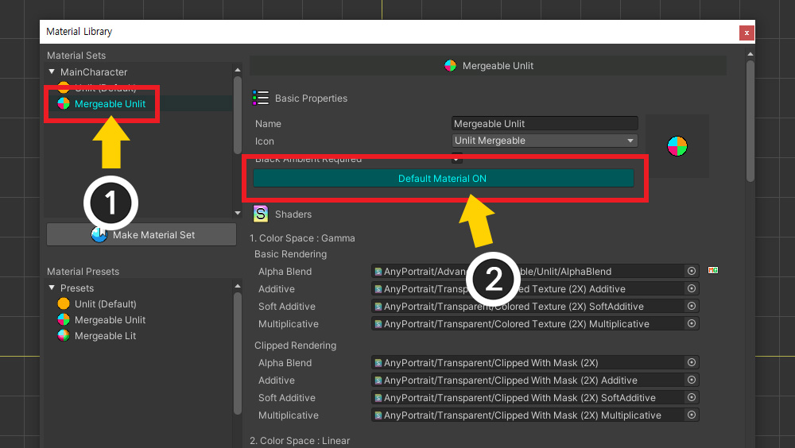
(1) 追加した「マテリアルセット」を選択します。
(2) 「Default Material」ボタンを押して「ON」で有効にします。
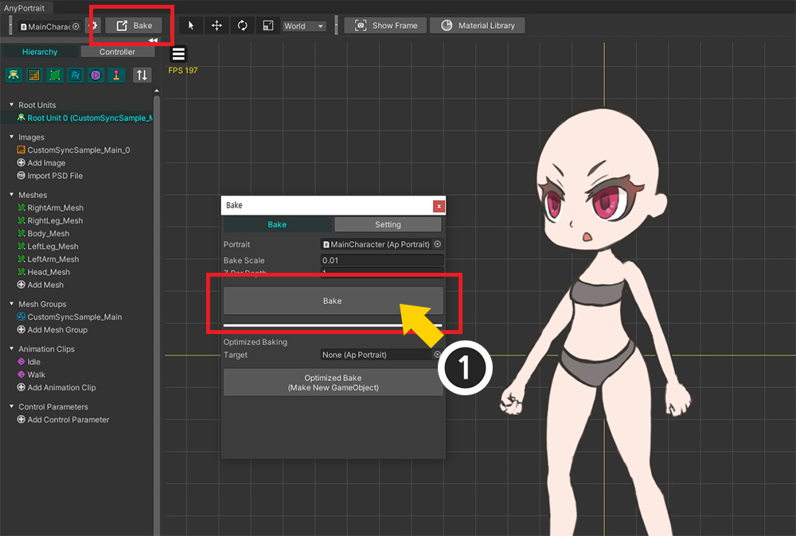
Bakeを実行します。

マテリアルをマージする別のキャラクターを開き、上記の手順を繰り返します。
2つのキャラクターはイメージは異なりますが、同じ「Mergeable Unlit」でレンダリングされる状態になりました。
スクリプトを作成してマテリアルをマージしましょう。
（キャラクター同期のスクリプト説明や関数は省略されています。関連ページで詳細な説明をご確認ください。）
using UnityEngine;
using AnyPortrait;
public class MergeMaterialScript : MonoBehaviour
{
public apPortrait mainCharacter;
public apPortrait costumePrefab;
private apPortrait _attachedCostume = null;
void Start() { }
void Update()
{
// Qキーを押すと、服をキャラクターに付けて同期します。 (関数の説明を省略)
if (Input.GetKeyDown(KeyCode.Q))
{
// 服が装着されると、_attachedCostume変数に対応するオブジェクトが割り当てられます。
AttachCostume();
}
// Wキーを押すと、装着されている服を取り外します。
if (Input.GetKeyDown(KeyCode.W))
{
// 服を削除する前に、マテリアルのマージを解除します。
mainCharacter.UnmergeMaterials();
// 同期を解除して服を削除します。 (関数の説明を省略)
// _attachedCostume変数はnullになります。
DetachCostume();
}
// Aキーを押すとマテリアルをマージします。
if (Input.GetKeyDown(KeyCode.A))
{
if(_attachedCostume != null)
{
mainCharacter.MergeMaterials(_attachedCostume);
}
}
// Sキーを押すと、服装着の有無にかかわらずマテリアルマージを解除します。
if (Input.GetKeyDown(KeyCode.S))
{
mainCharacter.UnmergeMaterials();
}
}
（AttachCostume、DetachCostume関数の説明は省略）
}
マテリアルマージに関連する関数が使用されていることを上記のスクリプトで見ることができます。
- MergeMaterials : apPortraitオブジェクトを引数として入力してマテリアルをマージします。 複数のapPortraitを入力したり、何も入力しなくても動作します。
- UnmergeMaterials : マテリアルマージをすべて解除します。 マテリアルがマージされたapPortraitオブジェクトのすべての接続が解放されます。
同期を解除する前に、まずUnmergeMaterials関数を呼び出したことにも注意してください。
そして、これら2つの関数は内部に「マテリアル初期化」プロセスを含んでいます。
したがって、これらの関数を呼び出した後、メッシュの色などは元に戻ります。
それでは、上記のスクリプトを適用してレンダリングプロセスがどれほど変わったかを見てみましょう。
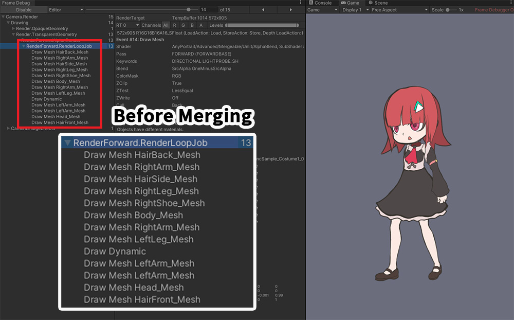
同様に「Frame Debugger」をオンにして、各ケースについてテストしてみました。
マテリアルをマージする前のイメージです。
前述のように、いくつかの手順を除いて、ほとんどのメッシュがマージされていない状態でレンダリングされています。
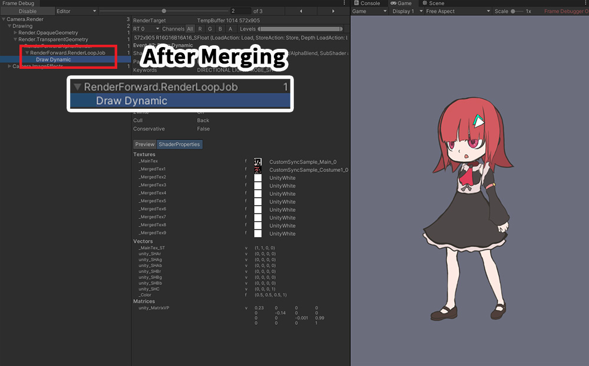
「MergeMaterials」関数を実行してマテリアルをマージした結果です。
2つのキャラクターをレンダリングするのに1個のドローコールだけが発生しました。
2つのキャラクターをレンダリングするために予想される最小のドローコールである2よりも最適化されたものです！
マテリアルマージ機能の特徴
「マテリアルマージ」機能は、「最大10個」の画像を受け取ってレンダリングできるシェーダを利用します。
このシェーダは、メッシュの頂点の色を使用してどの画像を使用するかを決定します。
「マテリアルマージ」機能は、このシェーダの特性を活用して、対象となるすべてのメッシュを検査し、できるだけ少ないマテリアルを持つようにマージします。
ただし、これらの機能により、「マテリアルマージ」機能には以下の制限があります。
- 「クリッピングマスク」と「クリッピングされるメッシュ」は除外されます。
- 「Alpha Blend」以外のシェーダは除外されます。
- テクスチャをキー値にまとめてマテリアルのプロパティを制御するスクリプト関数は機能しません。
- マテリアルの属性を一括制御したいスクリプト関数は、連結されたすべての文字を対象とします。
- カスタム属性を除いて画像の変更はできません。 「Extra Option」で画像を変更できますが、ドローコールが増加します。
- 「Mergeable」属性を持っていても、異なるシェーダは互いにマージされません。
メッシュのマテリアルを制御するスクリプト関数を使用した場合は、結果にどのような違いがあるかを見てみましょう。

1 つの文字 (MainCharacter) を対象に、apPortrait の「SetMeshColorAll(Color color2X)」関数を呼び出した場合です。
マテリアルがマージされる前（左）には、関数が呼び出されたキャラクターだけが色が変更されます。
しかし、マテリアルがマージされた後（右）には、色変更関数が呼び出されていない他のキャラクターオブジェクト（Costume）の色も同様に変更されます。

「イメージ名」を入力して色を一括変更する関数「SetMeshColorAll(sting optTextureName, Color color2X)」を呼び出した結果です。
（前の例と関数の名前は同じですが、引数が異なります。）
マテリアルがマージされると、テクスチャを区別してプロパティを変更することは不可能になります。
これは、「イメージごとに1つのマテリアル」という既存のルールが適用されないためです。
したがって、上記とスクリプト関数は動作せず、「Console」タブでログを見つけることができます。
メッシュのマテリアルを変更するスクリプト関数は、マテリアルのマージ後に上記のように異なる動作や使用ができなくなります。
関数の変更点を以下で確認してください。
（未紹介の関数は従来と同じように動作します。）
マテリアルがマージされたすべてのキャラクターに対象が拡張される関数
：すべてのメッシュをターゲットにしてマテリアルのプロパティを変更する関数は、そのターゲットが拡張されます。
- ResetMeshMaterialToBatchAll()
- SetMeshAlphaAll(float alpha)
- SetMeshCustomAlphaAll(float alpha, string propertyName)
- SetMeshColorAll(Color color2X)
- SetMeshCustomColorAll(Color color, string propertyName)
- SetMeshCustomImageAll(Texture2D texture, string propertyName)
- SetMeshCustomTextureOffsetAll(Vector2 textureOffsetValue, string propertyName)
- SetMeshCustomTextureScaleAll(Vector2 textureScaleValue, string propertyName)
- SetMeshCustomFloatAll(float floatValue, string propertyName)
- SetMeshCustomIntAll(int intValue, string propertyName)
- SetMeshCustomVector4All(Vector4 vector4Value, string propertyName)
使用できない関数
：テクスチャをキー値として一括変更する関数は動作しません。
- ResetMeshMaterialToBatchByTextureName(string optTextureName)
- SetMeshImageAll(string optTextureName, Texture2D texture)
- SetMeshCustomImageAll(string optTextureName, Texture2D texture, string propertyName)
- SetMeshColorAll(string optTextureName, Color color2X)
- SetMeshAlphaAll(string optTextureName, float alpha)
- SetMeshCustomColorAll(string optTextureName, Color color, string propertyName)
- SetMeshCustomAlphaAll(string optTextureName, float alpha, string propertyName)
- SetMeshCustomFloatAll(string optTextureName, float floatValue, string propertyName)
- SetMeshCustomIntAll(string optTextureName, int intValue, string propertyName)
- SetMeshCustomVector4All(string optTextureName, Vector4 vector4Value, string propertyName)
「マテリアルマージ」がドローコールを減らす最善の方法ですか？
AnyPortraitの既存のドローコール最適化機能が適用されている場合は、同じマテリアルを持つ他のキャラクターができるだけ最小のドローコール内で一度にレンダリングできるようにします。
しかし、「マテリアルマージ」が適用されたキャラクターは、他のキャラクターと一緒にレンダリングされません。
つまり、場合によっては、「マテリアルマージ」を試みずにそのままにしておくと、より少ないドローコール内でレンダリングされることがあります。
「他のキャラクターとのドローコール最適化」については、関連ページで詳細をご覧いただけます。
1. マテリアルのマージが推奨される場合
- プレイヤーキャラクターのように、ゲーム内で唯一の場合
- 同期機能を利用して衣装、武器などをキャラクターに装着する場合
- 2つ以上の画像を持ち、多くのメッシュを持つキャラクターを最適化したい場合
- キャラクターに色効果などをよく使用してキャラクター間のドローコール共有がうまくいかない場合
2. マテリアルのマージが推奨されない場合
- モンスターキャラクターのように、ゲーム内に同じキャラクターが多数存在する場合
- キャラクターのイメージが1つで色効果を頻繁に使用しない場合
「URP 2D」環境でマテリアルをマージする
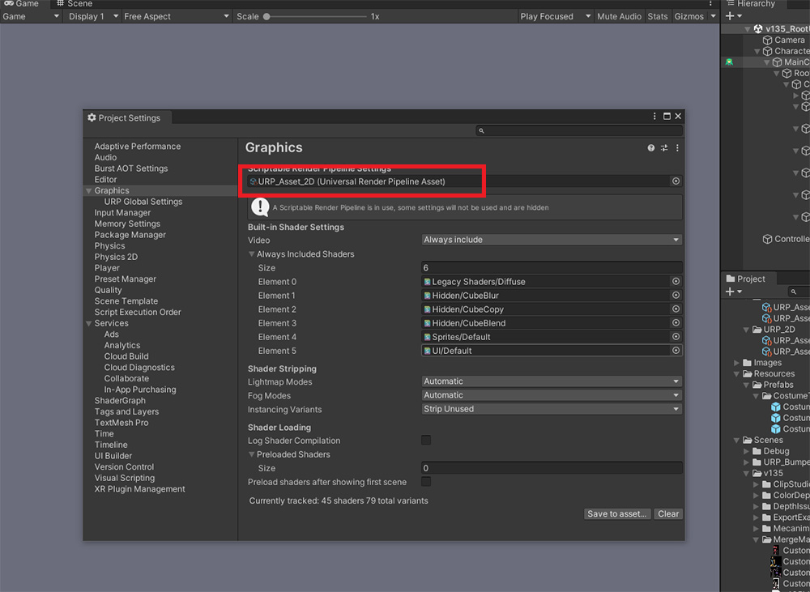
上記のように、プロジェクトの「レンダリングパイプライン（Render Pipeline）」が「2D Renderer」を使用するURPの場合は、他のマテリアルを使用する必要があります。
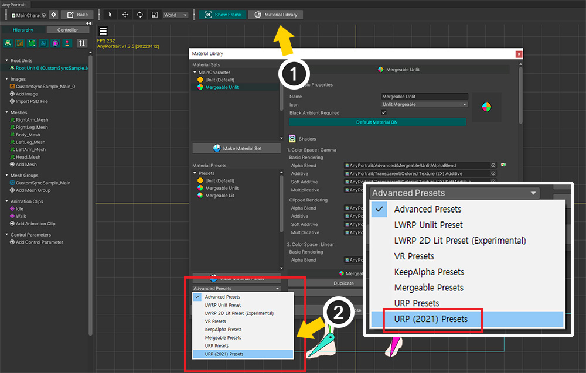
(1) 「マテリアルライブラリ」を開きます。
(2) 「URP（2021）Presets」パッケージを選択します。

(1) 「Unpack Preset」ボタンを押します。
(2) インストールが完了し、再び「マテリアルライブラリ」を開くと、「URP用プリセット」がインストールされていることがわかります。
(3) 「Make Material Set」ボタンを押します。
(4) URP用の「Mergeable」マテリアルを選択します。 ライティングの有無に応じて「Unlit」または「2D Lit」を適切に選択してください。
(5) 「Select」ボタンを押します。

(1) 作成した「マテリアルセット」を選択します。
(2) 「Default Material」ボタンを押して「ON」で有効にします。
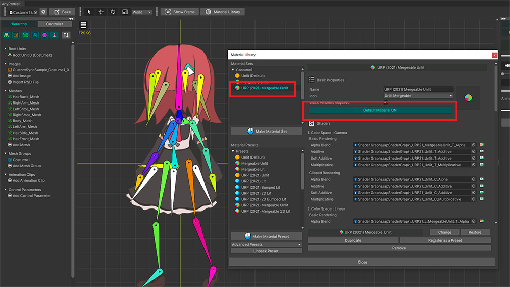
他のキャラクターオブジェクトも同じマテリアルを持つように同じ方法で設定します。
それでは、先ほど使ったスクリプトを使って同じテストをしましょう。
ゲームを実行し、マテリアルマージの前後にドローコールがどのように変わるかを確認しましょう。

奇妙なことに、マテリアルをマージするかどうかに関係なく、ドローコールは同じように15を記録します。
これは、このページの冒頭で説明した「Unityのドローコールの最適化」と関連しています。
URP のような「SRP (Scriptable Render Pipeline)」を使用する場合、Unity は別のレンダリングプロセスを持ちます。
このプロセスを「SRP Batch」と呼びます。
「SRP Batch」内では、異なるマテリアルのメッシュが一度にレンダリングされます。
「Frame Debugger」で「SRP Batch」がどのように動作するかを見てみましょう。
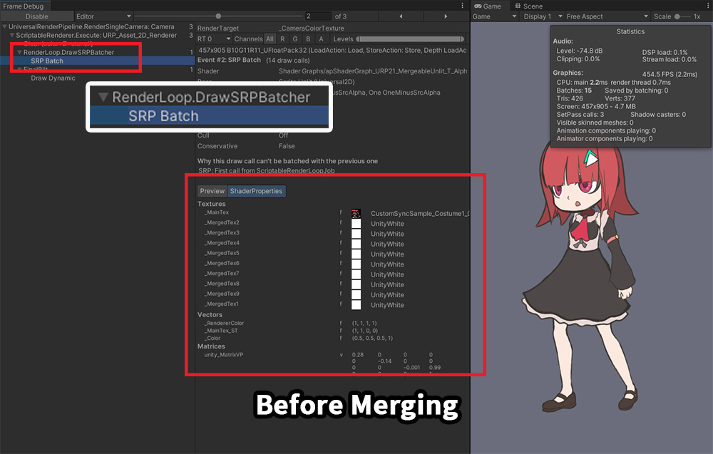
マテリアルをマージする前のレンダリングプロセスです。
現在のレンダリングプロパティを見ると、マテリアルをマージする前にもかかわらず、すでにドローコールが1に減っている状態です。
「SRP Batch」によって異なるマテリアルを持つメッシュが一度にレンダリングされてしまったのです。

レンダリングプロパティを確認すると、1つのマテリアルに2つのテクスチャが含まれ、マテリアルがマージされたことがわかります。
Unityですでに最適化されているため、マテリアルがマージされた後も同じ結果を見ることができます。

実際、URPではあえて「マテリアルマージ」をしなくても大丈夫です。
ただし、「マテリアルマージ」によるスクリプト関数の変化を利用したい方のために、URP用の「Mergeable」マテリアルを提供します。
上の画像のように「マージされたキャラクターを対象にマテリアルの属性を一括変更する特性」をURPで利用できます。
単一キャラクターのマテリアルマージ

マテリアルをマージする関数「MergeMaterials」に引数を入力しないことがあります。
上記のように、1つのキャラクター内に2つ以上の画像を持つ場合のためです。
高解像度のイラストでキャラクターを作る場合、2つ以上のイメージが必要ですが、「マテリアルマージ」機能はこのとき効果的に使用されます。

マテリアルをマージするためのプロセスは上記と同じです。
「マテリアルライブラリ」で「Mergeable」プリセットに基づいて「マテリアルセット」を作成して適用します。

ゲームを実行しましょう。
マテリアルがマージされる前には、1つのキャラクターだけ存在するにもかかわらず、いくつかの段階に分かれてレンダリングとなっています。
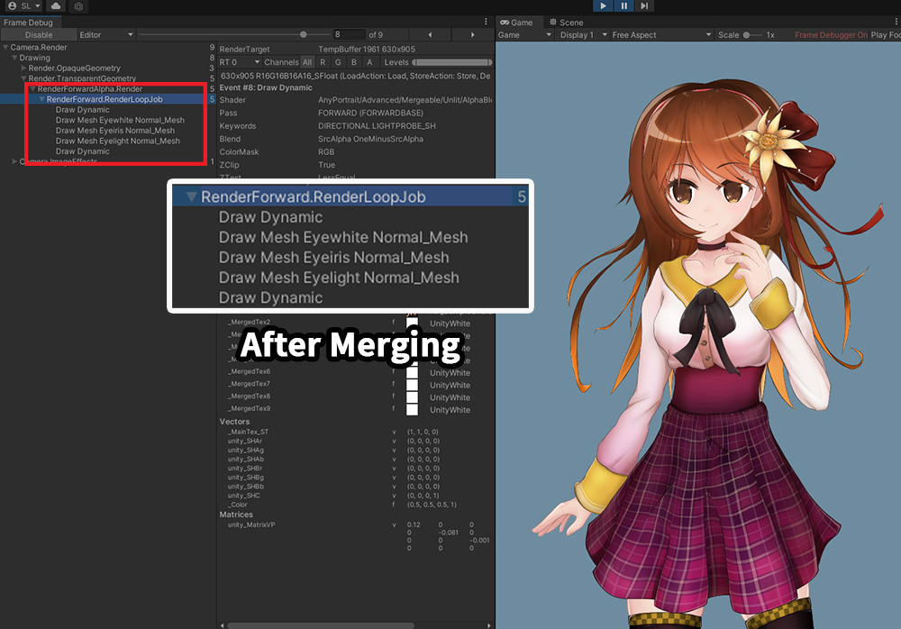
スクリプトを使用してマテリアルをマージすると、「クリッピングに関連するメッシュ」を除いて、残りのすべてのメッシュが最小のドローコールでレンダリングされることがわかります。